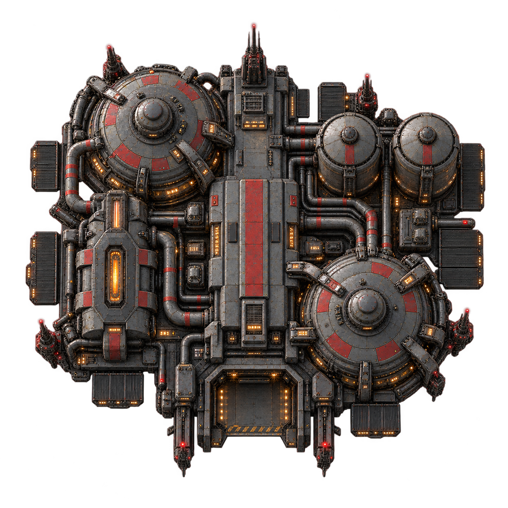
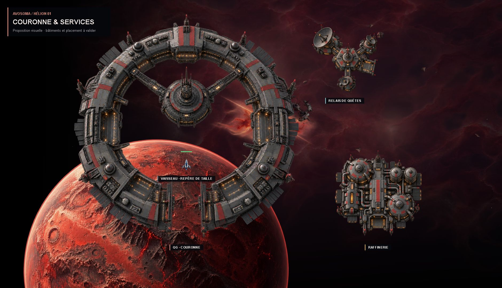
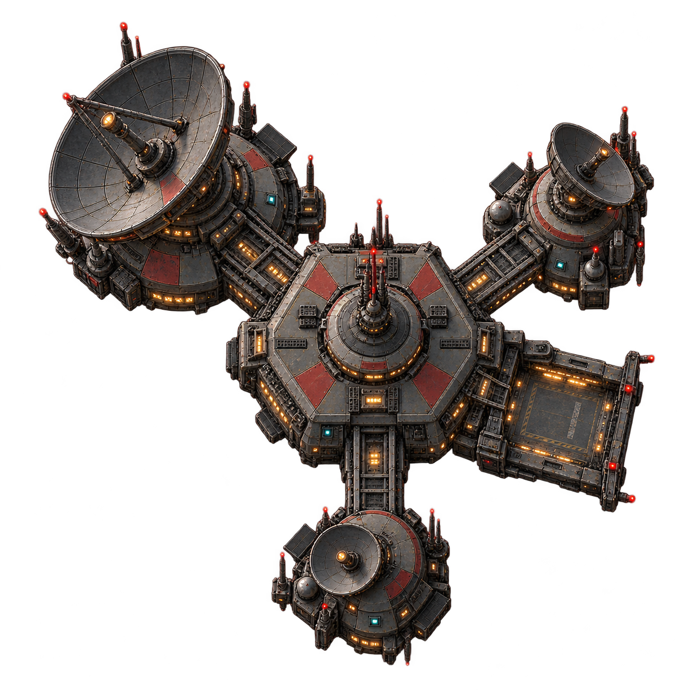

RAFFINAGE · 460 UNITÉS
Raffinerie
Des cuves de traitement, un réseau de conduites et un quai de livraison. Les ouvertures ambrées soulignent son activité industrielle.
Une raffinerie industrielle et un relais de quêtes assortis à la couronne : mêmes métaux sombres, panneaux rouges et éclairages discrets. Les deux services restent plus petits que le QG et sont placés côté intérieur de la map.

Vue d’ensemble à 78 % : QG de 1 100 unités, raffinerie de 460 et relais de 350. Le vaisseau au centre donne le repère de taille. Ouvrir en grand.

Des cuves de traitement, un réseau de conduites et un quai de livraison. Les ouvertures ambrées soulignent son activité industrielle.

Une silhouette plus légère, avec des antennes de tailles différentes et un poste de contrôle. Quelques indicateurs cyan distinguent la fonction de communication.